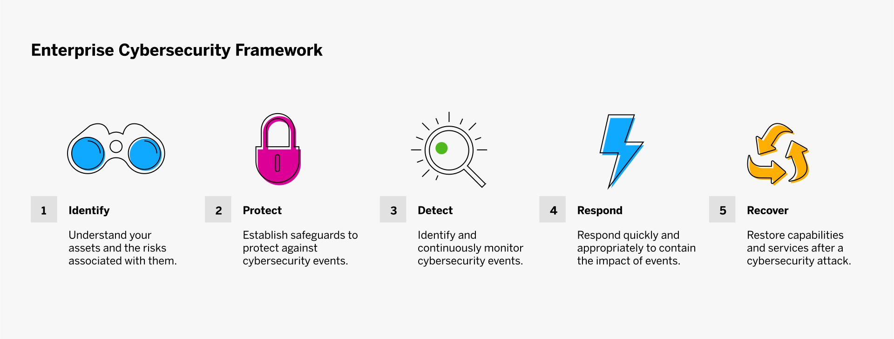

Кибербезопасность — это практика защиты сетей, устройств, приложений, систем и данных от киберугроз. Основная цель заключается в отражении атак, которые пытаются получить доступ к данным или уничтожить их, вымогать деньги или нарушить нормальное выполнение бизнес-операций — независимо от того, исходят ли эти атаки изнутри или извне организации.
Важность кибербезопасности
В прошлом году количество и сложность корпоративных кибератак резко возросли. Киберпреступники всегда готовы воспользоваться новыми возможностями. По данным ФБР, число случаев киберпреступности подскочило на 300% в начале пандемии 2020 года. Отчасти этот рост был вызван тем, что хакеры нацелились на компании, перешедшие на удаленную работу и домашние офисы, не имеющие мощной инфраструктуры кибербезопасности. Сама пандемия также породила возможности для атак, включая поддельные предложения вакцин и фишинговые кампании, связанные с COVID-19.
358
%
рост числа атак с использованием вредоносного ПО в 2020 году
Кибератаки почти всегда связаны с получением доступа к данным в корыстных целях. Большая часть этих данных хранится в облаке, но все чаще они также хранятся на личных устройствах, устройствах Интернета вещей (IoT), в частных сетях и серверах. Темпы роста объемов данных стремительно увеличиваются. Согласно прогнозам, к 2025 году в мире будет храниться 200 зеттабайт данных. Важность кибербезопасности невозможно переоценить, и создание надежных систем защиты данных является одним из главных приоритетов для предприятий и правительств во всем мире.
Типы кибератак
По мере того как мир становится все более взаимосвязанным и зависимым от технологий, а мы все чаще ведем свой бизнес и жизнь в интернете, мы создаем все больше возможностей для киберпреступников, методы которых становятся все более изощренными.
Атаки на основе социальной инженерии Социальная инженерия — это практика манипулирования людьми с целью заставить их раскрыть чувствительную конфиденциальную информацию для получения денежной выгоды или доступа к данным. Сюда относятся фишинг и целевой фишинг (spear phishing), а также другие угрозы, цель которых — заставить пользователя перейти по ссылке, загрузить вредоносное ПО или довериться вредоносному источнику.
В 2020 году почти в трети случаев взлома использовались методы социальной инженерии, 90% из которых приходились на фишинг.
Атаки при помощи вредоносного ПО. Вредоносное ПО — это программы, разработанные для нанесения ущерба, такие как вирусы, черви, шпионские и рекламные программы, которые могут заражать компьютеры. Программы-вымогатели — это хорошо известный тип вредоносного ПО, которое получает доступ к файлам или системам и блокирует их для получения выкупа.
Согласно прогнозам, к концу года глобальный ущерб от программ-вымогателей достигнет $20 млрд, тогда как в 2015 году он составлял $325 млн.
Атаки на Интернет вещей (IoT). Устройств Интернета вещей в мире сегодня больше, чем людей, и они представляют множество возможностей для хакеров, поскольку эти устройства уязвимы для атак типа «человек посередине» (Man-in-the-Middle, MITM), атак типа «отказ в обслуживании (DoS)», вредоносного ПО, атак типа «постоянный отказ в обслуживании» (PDoS) и атак нулевого дня.
br
В 2020 году объем рынка IoT достигнет 31 миллиарда подключенных устройств, а к 2025 году их число составит около 75 миллиардов.
Постоянная серьезная угроза (advanced persistent threat, APT). Угрозы типа APT представляют собой многоступенчатые атаки, в ходе которых хакеры проникают в сеть незамеченными и остаются в ней в течение длительного времени, чтобы получить доступ к конфиденциальным данным или нарушить работу критически важных служб. APT часто направлены на отрасли с информацией высокой важности, такие как национальная оборона, производство и финансы.
Атаки типа «отказ в обслуживании» (DoS). DoS-атаки или распределенные атаки типа «отказ в обслуживании» (DDoS) имеют место, когда злоумышленник парализует работу сервера или сети, чтобы на некоторый или неопределенный срок сделать их недоступными — обычно переполняя их трафиком настолько, что другие пользователи не могут получить к ним доступ. Такое вмешательство может привести к полному нарушению работы подключенных систем, вызывая масштабные сбои и значительные финансовые последствия из-за простоя.
В первой половине 2020 года количество DDoS-атак выросло на 15%. Было зафиксировано почти 4,83 млн атак, причем рост числа атак по более чем 15 векторам составил 126%.
Как работает кибербезопасность?
Универсального решения для обеспечения кибербезопасности предприятия не существует. Несколько уровней защиты работают вместе для защиты от нарушения процессов, а также от доступа к информации, ее изменения, уничтожения или удержания с целью выкупа. Такая защита должна постоянно совершенствоваться, чтобы активно противостоять возникающим киберугрозам. Несколько решений могут быть интегрированы для организации единой системы защиты от потенциальных кибератак.
Безопасность приложений
Средства обеспечения безопасности приложений направлены на повышение их безопасности на этапе разработки приложений и после их развертывания. Эти средства подразделяются на такие типы, как антивирусные программы, межсетевые экраны и программы шифрования.
Безопасность в облаке
Продолжающийся переход в частные, общедоступные и гибридные облака означает, что поставщики облачных услуг должны по-прежнему уделять первоочередное внимание внедрению надежной и современной системы облачной безопасности для защиты систем, данных и доступности. Безопасность в облаке включает в себя классификацию данных, предотвращение потери данных, шифрование и многое другое.
Безопасность Интернета вещей
С распространением Интернета вещей риски также растут. Хотя безопасность Интернета вещей зависит от конкретного устройства и способа его применения, встраивание защиты в устройства, обеспечение безопасного обновления и безопасной интеграции, а также защита от вредоносного ПО входят в число лучших практик по обеспечению безопасности Интернета вещей.
Безопасность критически важной инфраструктуры
Жизненно важные для нашего общества киберфизические системы, включая электросети, системы водоснабжения и службы здравоохранения, подвержены различным рискам. Для защиты этих систем от стихийных бедствий, физических атак и кибератак развертывается система обеспечения безопасности жизненно важной инфраструктуры.
Сетевая безопасность
Сетевая безопасность представляет собой сочетание аппаратных и программных решений, обеспечивающих защиту от несанкционированного доступа к сети, который может привести к перехвату, изменению или краже информации. К типам сетевой безопасности относятся учетные данные для входа в систему, пароли и защита приложений.
Безопасность оконечных устройств
Оконечные устройства, или устройства конечного пользователя, среди которых настольные компьютеры, ноутбуки, беспроводные системы и мобильные устройства, являются точками входа для угроз. Безопасность оконечных устройств включает в себя защиту от вирусов и вредоносных программ, безопасность Интернета вещей и безопасность облачных систем.
Информационная безопасность
Информационная безопасность (InfoSec) направлена на обеспечение конфиденциальности, целостности и доступности всех цифровых и аналоговых данных организации. Существует множество типов информационной безопасности, включая защиту приложений, шифрование и аварийное восстановление. Кибербезопасность можно рассматривать как подмножество информационной безопасности; оба направления сосредоточены на защите данных, но InfoSec имеет более широкую сферу применения.
Предотвращение потери данных
Предотвращение потери данных (DLP) призвано не допустить выход конфиденциальных данных за пределы организации, будь то преднамеренная утечка или случайный обмен. Технологии DLP, позволяющие отслеживать, идентифицировать и предотвращать несанкционированный поток информации, включают классификацию, шифрование, мониторинг и применение политик.
Управление идентификацией и доступом (IAM)
Системы управления идентификацией и доступом, включающие двухфакторную и многофакторную аутентификацию, управление привилегированным доступом и биометрию, помогают организациям контролировать доступ пользователей к критически важной информации и системам как локально, так и в облаке.
Управление информационной безопасностью и событиями безопасности (SIEM)
Современные решения SIEM отслеживают и анализируют данные о безопасности и события в режиме реального времени, помогая организациям обнаруживать киберугрозы и реагировать на них до того, как они успеют нарушить работу бизнеса. Используя искусственный интеллект (ИИ) и машинное обучение, SIEM осуществляет расширенный анализ поведения пользователей и сущностей (UEBA), чтобы оставаться в курсе постоянно меняющихся угроз.
Обучение для повышения осведомленности о кибербезопасности
Конечные пользователи являются как первой линией защиты от кибератак, так и самым слабым звеном в цепи кибербезопасности; именно поэтому фишинг остается настолько распространенной киберугрозой. Согласно оценкам, человеческое поведение является причиной до 90% кибератак. Поэтому постоянное обучение конечных пользователей инициативам в области кибербезопасности, помогающее им принимать рациональные решения по киберзащите, исключительно важно. До тех пор, пока люди будут попадаться на фишинговые аферы, использовать слабые пароли и работать в незащищенных сетях, они будут подвержены риску. Поскольку удаленная работа продолжается во время пандемии, а гибридный персонал в будущем станет нормой, удаленные работники будут и впредь становиться мишенью для злоумышленников.
Корпоративный фреймворк кибербезопасности
Фреймворк кибербезопасности, предложенный Национальным институтом стандартов и технологий (NIST), опирается на пять базовых принципов, которые лежат в основе рекомендаций по выбору лучших практик для управления киберрисками и для формирования фреймворка кибербезопасности. Организации могут разработать проактивный подход к кибербезопасности, руководствуясь совокупностью этих принципов. К ним относятся:

1. Идентификация. Этот основополагающий компонент предполагает формирование полного представления о ваших активах и рисках для них, на основе которого вы сможете внедрить политики и процедуры для управления этими рисками.
2. Защита.Второй компонент направлен на создание соответствующих гарантий для защиты вашей организации от событий, связанных с кибербезопасностью.
3. Обнаружение. Реализация мер по идентификации событий кибербезопасности, включая непрерывный мониторинг, является основой компонента обнаружения.
4. Реагирование.Как только событие обнаружено, наличие плана быстрого и надлежащего реагирования и локализации последствий является важнейшим компонентом фреймворка NIST.
5. Восстановление. Способность восстанавливать возможности и сервисы после кибератаки обеспечивает устойчивость бизнеса — и она не менее важна, чем быстрое реагирование на атаки.
Будущее кибербезопасности
Все элементы кибербезопасности развиваются. Вместе с новыми технологиями появляются новые цели. Киберпреступники постоянно совершенствуют типы и методы своих атак — и последствия этих атак становятся все более значительными. Инструменты, которые могут помочь повысить уровень кибербезопасности, такие как ИИ и сети 5G, являются серьезным стимулом как для экспертов по кибербезопасности, так и для киберпреступников. Хотя характер будущих угроз трудно определить, очевидно, что кибербезопасность будущего должна быть проактивной, чтобы иметь возможность адаптироваться и подстраиваться под все новые и новые угрозы.
ИИ и кибербезопасность
Искусственный интеллект (ИИ) является неотъемлемой частью кибербезопасности будущего — как в качестве оружия для хакеров, так и в качестве инструмента для экспертов, позволяющего устранять уязвимости, выявлять проблемы и отражать атаки. Способность искусственного интеллекта быстро проверятьбольшие данные и использовать машинное обучение для анализа, обновления и изучения шаблонов действий пользователей делает его отличным инструментом для прогнозирования новых атак и обнаружения потенциально вредоносного поведения в режиме реального времени. Если традиционные методы кибербезопасности сосредоточены на защите внешних объектов для отражения атаки, встроенные программы кибербезопасности с использованием ИИ могут укрепить внутренние средства защиты.
5G и кибербезопасность
5G, пятое поколение беспроводных технологий, обещает новый уровень скорости, связности и надежности, поддерживая все более мощные меры кибербезопасности. Однако с увеличением пропускной способности появляется больше возможностей для атак, включая более уязвимые конечные точки. Чтобы свести к минимуму риски, связанные с 5G, сообществу экспертов по кибербезопасности необходимо будет выявить слабые места и уязвимости, а затем внедрить аппаратные и программные контрмеры.
Бесфайловые вредоносные программы
Атаки вредоносных программ без файлов приобретают все большее распространение и сегодня являются одной из самых серьезных цифровых угроз для компаний, отчасти из-за того, что их очень трудно обнаружить. Бесфайловое вредоносное ПО использует программное обеспечение и инструменты, принадлежащие самой компании, для выполнения вредоносных действий, вместо того чтобы использовать собственные механизмы атак или устанавливать вредоносное ПО на жесткие диски. Этот стиль атаки называется living-of-the-land (LotL). Он не создает новых файлов, поэтому ускользает от обнаружения решениями кибербезопасности, которые сканируют вредоносные вложения или отслеживают создание файлов.
Дипфейки
Создание дипфейков — это недавно возникшая и очень серьезная угроза, способная экспоненциально подпитывать фальшивые новости и дезинформацию, а также атаки методом социальной инженерии. Если вы видите или слышите, как ваш начальник поручает вам что-то сделать, вы, скорее всего, выполните его приказ, каким бы необычным он вам ни показался. Постоянное обучение конечных пользователей использованию доверенных источников может помочь в борьбе с дипфейками, а решения кибербезопасности с алгоритмами ИИ, предназначенные для обнаружения фейков, станут важнейшим средством защиты от них.
Заключение
Поскольку ежедневно обнаруживаются новые вредоносные программы и вирусы, а ущерб от киберпреступлений, по прогнозам, к 2025 году достигнет $10,5 трлн в год, средства защиты кибербезопасности должны развиваться одновременно с угрозами или опережать их. Подход с нулевым уровнем доверия — когда вы предполагаете, что не можете доверять ни одному устройству, пользователю или сервису — может стать основой всех аспектов кибербезопасности организации и способствовать переходу к более безопасному кибер-будущему.